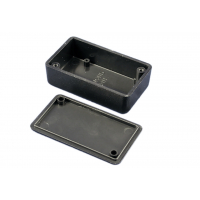

Project template containing the recommended board layout for Hammond Manufacturing 1551H:
Translucent - Blue: 1551HTBU - HM1144-ND
Gray: 1551HRGY - HM3445-ND
Black: 1551HRBK - HM3444-ND
Gray: 1551HGY - HM379-ND
Gray: 1551HFLGY - HM1781-ND
Black: 1551HFLBK - HM1066-ND
Black: 1551HBK - HM376-ND
|
|
 |
The "Dwgs.User" layer contains all critical dimmensions in milimeters[inches].
The "Edge.Cuts" layer contains the maximum board outline and holes to align with board standoffs.
PCB Preview: